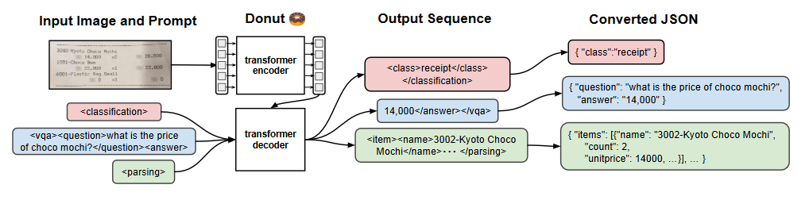

Donut: Chatgpt of DocumentAI
• 5 minutes read | • 🕮 458 words
Visual Document Understanding (VDU) is a challenging yet crucial area of Document AI. Until Kim et al. (2021) introduced Donut, the entire document understanding field relied heavily on OCR (Optical Character Recognition) engines. Thanks to Vaswani et al. for introducing transformers and attention mechanism, which have revolutionized various domains of computer science! These innovations have also impacted the Document AI domain and inspired Kim et al. to develop Donut, an Document Understanding Transformer.
Depending on the OCR engines have several problems.
- High computational costs for using OCR
- Inflexibility of OCR models on languages or types of document
- OCR error propagation to the subsequent proces
Although OCR-dependent approaches have shown very promising results, these issues have hindered the ability to achieve proper accuracy. To address these issues, the authors introduced Document Understanding Transformer(Donut).
Donut works on document images, such as commercial invoices, receipts, and business cards. Donut is capable of performing three core tasks.
- Document classification
- Information extraction
- Visual question answering
This comparison contrasts traditional VDU models, which typically solve tasks in two stages, with the proposed transformer-based approach that handles the problem in an end-to-end fashion. They claimed, Donut surpasses traditional OCR-based approaches in every aspect—memory usage, processing time, and accuracy.
Model Architecture
Donut follows an encoder-decoder model. It consists of transformer-based visual encoders and textual decoder modules. Here’s the twist: Donut does not directly use any OCR, but these visual encoders work like an OCR engine. In the paper, they refer to this part as pseudo-OCR. These encoders read the text from top-left to bottom-right. Thus, the term OCR-free in the paper means without relying on any external OCR.
Encoder
For the encoder part they could use CNN-based or transformer-based models. They experiemented with ImageNet, EfficientNetV2, Vision Transformer(ViT) and Swin Transformer. They chose Swin Transformer due to the high scalability of the Transformer-based architecture and higher performance over the EfficientNetV2’s.
The Swin Transformer initially divides the input image x into non-overlapping patches. These patches undergo processing in Swin Transformer blocks, which include a shifted window-based multi-head self-attention module and a two-layer MLP. Subsequently, patch merging layers combine information from patch tokens at each stage. The resulting output from the final Swin Transformer block {z} serves as input to the subsequent textual decoder. This is the high level of Swin Transformer.
Decoder
As the backbone of decoder module, BART was used. The decoder translates the embeddings into a sequence of tokens. In the autoregressive process, the decoder uses previously generated words as context to generate the next word. This approach allows the model to generate a textual representation of the input image without resorting to OCR. The output token sequence is converted to a desired structured format. They adopt a JSON format due to its high representation capacity.
